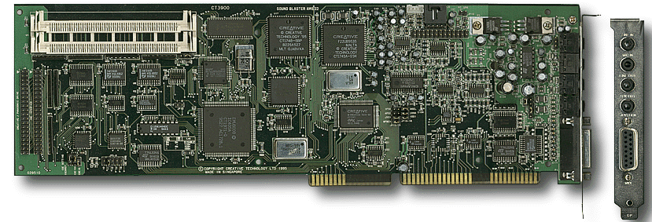

CREATIVE Sound Blaster AWE 32 CT-3900
Pre instalacije zvuène kartice, morate uraditi sledeæe korake:
Proèitajte uputstvo za podešavanje parametara zvuène kartice i prema tome podesite džampere.
Instalirajete zvuènu karticu u odgovarajuai slot na matiènoj ploèi.
Postoje dve grupe zvuènika koje je moguæe povezati sa zvuènom karticom u kompjuteru.
Pasivni zvuènici
Povežite ih na ženski džek koji ima oznaku SPEAKERS. Jaèinu zvuka æete podesiti uz pomoæ softvera koji ste dobili uz zvuènu karticu. Neki modeli zvuènih kartica pored džeka za povezivanje zvuènika imaju mali potenciometar kojim se reguliše jaèina zvuka.
Aktivni zvuènici (imaju u sebi pojaèalo)
Aktivne zvuènike nebi trebalo kaèiti na SPEAKERS izlaz sa zvuène kartice. Jedini ispravan naèin je da aktivne zvuènike povežete sa LINE OUT izlazom. Tako spreèavate dvostruko pojaèanje audio signala koje može fizièki da ošteti Vaše zvuènike.
Na zvuènu karticu možete prikljuèiti razlièite audio ureðaje. Npr.:
Pored audio ureðaja možete prikljuèiti i muzièke instrumente koji imaju MIDI interfejs ili isti MIDI / JOYSTICK port koristiti za povezivanje džojstika.
Na kvalitetnije zvuène kartice možete povezati CD-ROM drajv koji ima AT API interfejs. To je bilo posebno važno kada kompjuteri nisu imali EIDE interfejs (za 4 IDE drajva). Potrebno je pravilno izabrati memorijsku sdresu i tako džamperisati zvuènu karticu. Najbolje je da, ako CD-ROM drajv ne kaèite na EIDE port, posao prepustite struènjaku.